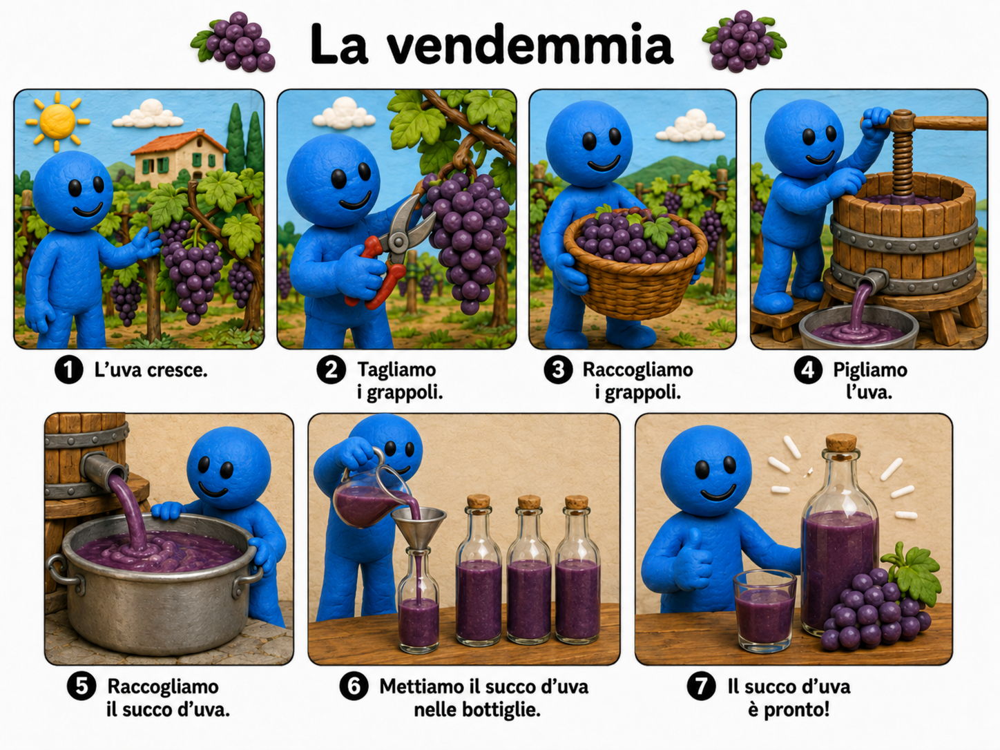

Scopri aspetti della cultura italiana attraverso immagini, tradizioni, geografia e risorse interattive.
Explore Italian culture through visual materials, traditions, geography, and interactive resources.

🍇 La vendemmia
Dall'uva al succo d'uva ·
From grapes to grape juice
Sequenza culturale visiva · Visual cultural sequence

🎭 Il Carnevale
Maschere, costumi, storia e tradizioni
Masks, costumes, history, and traditions
Italy Explorer
Esplora la geografia, la storia, i luoghi
e la cultura italiana.
Explore Italian geography, history,
places, and culture.
Apri Italy Explorer · Open Italy Explorer ↗